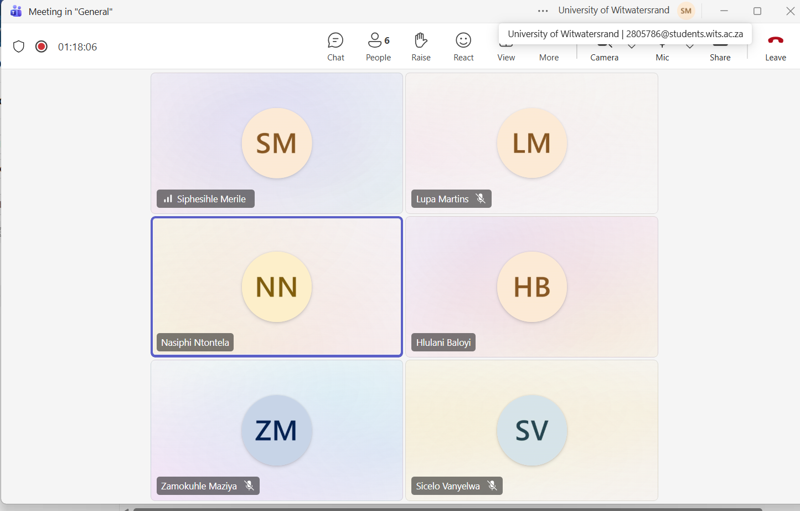
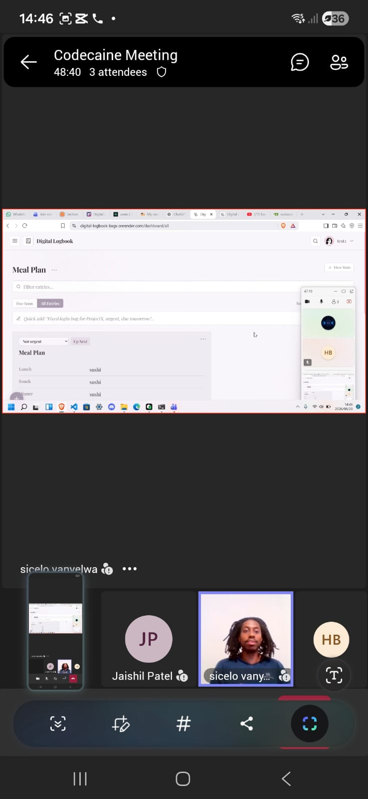

Meeting Log¶
Short, factual notes from each team meeting — attendees, what was discussed, decisions made, and what's still open. This is our evidence for the Stakeholder Interaction (10%) and Project Methodology (10%) lines of each sprint rubric.
Sprint 1¶
Meeting 1 — 27 July 2026¶
Venue: Wartenweiler Library, Focus Room 2 Attendees: Hlulani, Siphesihle, Lupa, Sicelo, Zamo, Nasiphi (full team)
Context: First meeting as a group. No project had been assigned yet.
What we did:
- Introductions — first time meeting as a team
- Read through the COMS3011A project brief together to work out which project best suited the group
- Narrowed the eight project options down to our top 5 and submitted them
Decisions made: Shortlist of 5 preferred projects submitted.
Open questions: None yet raised — pre-assignment stage.
Meeting 2 — 3 August 2026¶
Venue: Commerce Library, Room 3 Attendees: Hlulani, Siphesihle, Lupa, Sicelo, Zamo, Nasiphi (full team)
Context: The Digital Logbook project had now been officially assigned to us.
What we did:
- First deep read of the Digital Logbook project-specific brief
- Discussed what "the owner can customise the format of their logbook" actually requires in practice
Decisions made: None finalised — surfaced disagreement rather than resolved it.
Open questions / disagreements:
- Significant disagreement on how to interpret the custom entry-format requirement (how flexible it needs to be, what it means practically for the data model)
- Topic was handed to us later than expected, which compressed the time available to properly digest it before this meeting
Next step decided: Take the format-flexibility question to our tutor/client.
Meeting 3 — 4 August 2026¶
Venue: MSL005 Attendees: Hlulani, Siphesihle, Lupa, Sicelo + tutor/client
Context: First meeting with our assigned tutor/client.
What we did:
- Asked our tutor the open questions from Meeting 2, primarily around the custom entry-format requirement
- Consolidated the team's understanding of the project based on the tutor's answers
Decisions made:
- The team agreed to use Supabase as the primary backend platform instead of Firebase.
- Supabase would provide authentication and PostgreSQL database hosting for the project.
- The team confirmed that application logic would still be implemented through our own backend services rather than relying directly on auto-generated database APIs.
- This decision simplified the technology stack by combining authentication and database management within a single platform.
- The team's future database schema and backend implementation would therefore be designed around Supabase.
Open questions: (carry forward anything not resolved)
Meeting 4 — 7 August 2026¶
Venue: Wartenweiler Library, Focus Room 2 Attendees: Hlulani, Siphesihle, Lupa, Sicelo, Zamo, Nasiphi (full team)
Context: Team now had a clear, shared understanding of project requirements.
What we did:
- Wrote Sprint 1 user stories with Given/When/Then acceptance tests (see Sprint 1 User Stories)
- Assigned tasks to team members via Trello
- Set up the project repository on Gitea
Decisions made:
- Sprint 1 user stories and acceptance criteria finalised
- Task ownership assigned via Trello
- Repository created and initialised
Open questions: See Open Questions & Decisions for what was still outstanding after this point (e.g. microservices vs. single-backend approach, which surfaced later during initial implementation).
Keeping this current
Add a new entry after every future meeting — attendees, what was discussed, decisions made, and anything left open. Even a few lines per meeting is enough to count as evidence.
Meeting 5 — 13 August 2026¶
Venue: Wartenweiler Library, Focus Room 2
Attendees: Hlulani, Siphesihle, Lupa, Sicelo, Zamo, Nasiphi (full team)
Context: Authentication functionality had reached a working structure, including sign-up and login. The team met to discuss how to proceed with Sprint 1 implementation and establish a database design that would support the project requirements efficiently.
What we did:
- Reviewed progress on the sign-up and login implementation
- Discussed the next development priorities for Sprint 1
- Analysed the project brief and user stories to determine what data needed to be stored
- Explored different approaches for structuring the database schema
- Discussed how project data, logbook entries, and user information should be related
- Considered how to support customisable logbook formats while keeping the design efficient and maintainable
Decisions made:
- Database design would be treated as a priority before implementing additional features
- The schema should be driven by the project brief and user story acceptance criteria rather than by assumptions about future features
- The dashboard and project-management functionality would be built around the core entities required for Sprint 1
Open questions:
- Whether project records should be linked to users via Supabase Auth UUIDs rather than email addresses
- How dynamic/custom fields should be represented in the database
- Whether projects should use a dedicated UUID primary key instead of relying on project names
- Final review and approval of the proposed schema before implementation begins
Next step decided:
- Refine and finalise the database schema
- Begin implementation of the dashboard and project-creation functionality once the schema has been agreed upon
Meeting 6 — 17 August 2026¶
Venue: Online (Microsoft Teams) Attendees: Missy (Nasiphi), Siphesihle, Hlulani, Sicelo, Zamo, Lupa (full team)
Context: Sprint 1 implementation is underway. The team met to share progress updates and confirm who is doing what before the next tutor/client check-in.
What we did:
- Each member reported on their current Sprint 1 task:
- Missy (Nasiphi): Properly implemented the login structure.
- Siphesihle: Implemented the project/create-button functionality.
- Hlulani: Created the updated UI and implemented entry-side features.
- Sicelo: Committed to implementing the Stats feature.
- Zamo: Committed to implementing activity logs.
- Lupa: Was busy over the weekend; committed to completing the archive button before the tutor/client meeting.
- Reviewed how the individual pieces fit together for the dashboard and entry flow.
Decisions made:
- Task ownership for the remaining Sprint 1 features confirmed as above.
- Everyone agreed to have their assigned parts ready before the upcoming tutor/client session.
Open questions / disagreements:
- Frustration over local testing limitations because localhost was not working reliably. The team had to commit code they could not fully verify locally and rely on the deployed environment to confirm behaviour.
Next step decided:
- Lupa to finish the archive button before the tutor/client meeting.
- Rest of the team to continue with their assigned features and be ready to demonstrate progress.
Proof of meeting:

Meeting 7 — 20 August 2026¶
Venue: Wartenweiler Library, Focus room 2 (team in person; client/tutor JP joined online via Microsoft Teams) Attendees: Missy (Nasiphi), Siphesihle, Hlulani, Sicelo, Zamo, Lupa (full team) + JP (client/tutor)
Context: Sprint 1 progress demonstration to the client/tutor. The team showed the current Digital Logbook build and collected feedback before continuing with the remaining Sprint 1 work.
What we did:
- Demonstrated the current progress on the Digital Logbook application.
- Captured client feedback and requested changes:
- Add a voice feature.
- Show how many tasks are being completed / add task-completion visibility.
- Make the entry button more visible.
- Make the dashboard toggleable.
- Add a pin feature.
- Fix the entry card taking up half the space.
- Discussed two competing ideas for the dashboard:
- One view: show projects/recent projects first, then drill into project entries.
- Alternative view: show entries directly on the dashboard with a clear project label for quick recording.
- The client/tutor directed the team to use a bit of both approaches.
Decisions made:
- Dashboard will support both project-centric and entry-centric views (hybrid approach as suggested by the client).
- Client feedback items (voice, stats/visibility, entry button, toggle, pin, entry-card sizing) were accepted as the next priorities.
Open questions / disagreements:
- Team members disagreed on what should appear on the dashboard by default. This was resolved by the client/tutor’s “bit of both” guidance.
Next step decided:
- Start implementing the client feedback items listed above.
- Continue Sprint 1 work with the agreed dashboard direction.
Proof of meeting:

Meeting 8 — 24 August 2026¶
Venue: Wartenweiler Library, Focus Room 2
Attendees: Hlulani, Siphesihle, Lupa, Sicelo, Zamo, Nasiphi (full team)
Context: Final Sprint 1 team meeting before the Sprint Review scheduled for 25 August 2026. The purpose of the meeting was to verify that all Sprint 1 commitments had been completed, review completed work against the user stories and acceptance tests, and identify any remaining tasks that needed attention before the review.
What we did:
- Reviewed the Sprint 1 backlog and Trello board to confirm progress on all assigned tasks.
- Checked completed work against the Sprint 1 user stories and acceptance criteria.
- Verified the status of implemented features, including authentication, dashboard functionality, project creation, entries, statistics, activity logs, and archive-related functionality.
- Discussed integration issues between individual components developed by different team members.
- Reviewed repository commits and documentation to ensure Sprint 1 evidence was available.
- Identified any remaining bugs, UI issues, and incomplete features requiring attention before the Sprint Review.
- Discussed how the Sprint 1 demonstration would be presented during the review session.
Decisions made:
- Sprint 1 work was considered substantially complete and ready for final testing and review.
- Team members were assigned responsibility for resolving any remaining minor issues before the Sprint Review.
- Existing documentation, meeting logs, and development evidence would be updated and finalised before submission.
Open questions / disagreements:
- Minor discussion remained around dashboard behaviour and the presentation of certain features, but no major architectural or implementation disagreements remained.
- Any outstanding issues would be prioritised based on Sprint 1 acceptance criteria rather than additional feature requests.
Next step decided:
- Complete final testing and bug checks.
- Update remaining documentation where required.
- Prepare for the Sprint Review and demonstration on 25 August 2026.
- Begin planning for Sprint 2 based on feedback received during the review.